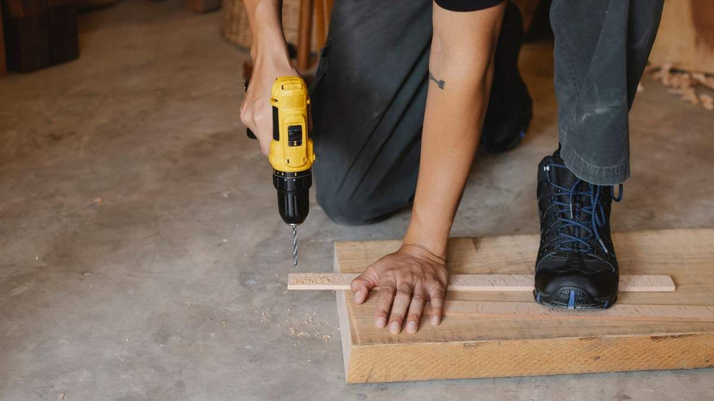

Crawl Space Repair & Sagging Floor Jacks in Savannah, GA
If the floor flexes when you walk across it, the problem is almost never the floor. It's the joists, girders, or support posts underneath – and in a Savannah crawl space, moisture is usually what weakened them.
Most Savannah homes sit on a raised crawl space, supported by a grid of piers and wood framing that was sized correctly the day it was built. Two things degrade that over the decades here: soil that shifts under the footings as it wets and dries, and humidity that never leaves the crawl space, softening the wood from below until it can no longer carry the span.
Repair means restoring the load path, not levelling the surface. We identify which support points have dropped and by how much, replace the framing that's gone soft, and set adjustable steel jacks on poured footings that bear on stable soil instead of loose fill.

Crawl Space RepairWhat this covers
- Floors that bounce, flex, or feel spongy underfoot
- A visible dip or slope toward the centre of a room
- Joists, girders, or sill plates with rot or insect damage
- Crawl space support posts that have sunk into the soil
- Masonry piers that have cracked, leaned, or lost mortar
- Squeaking or separating floorboards over one specific area
How the repair is done
Elevation survey first. Readings across the floor establish where the low points are and how far out of level the structure has actually gone – which is also the only honest way to tell you what levelling back is realistic.
Replace what's failed. Rotted joist sections, girders, and sill plate get cut out and replaced with treated lumber, sistered to sound framing.
New footings, then jacks. Adjustable steel jacks are set on poured concrete footings sized for the load. Putting a jack on bare dirt or a stacked block just moves the settling problem a few years down the road.
Lift gradually. Recovery happens over multiple visits, not in one afternoon. Lifting a settled floor too fast is how you crack drywall and bind doors upstairs.
What drives the cost
- How many support points need jacks, and how far apart the existing piers are
- How much framing is rotted rather than simply unsupported
- Crawl space headroom and access – a tight crawl is slower work
- Whether standing water or a moisture source has to be dealt with first
Local pricing for this work commonly runs from roughly $1,300 for a small run of joist and jack work up to about $4,900 when several bays need framing replaced. Broader structural jobs go higher. You get a firm number in writing after the inspection, never a phone estimate.
Free structural inspection
Elevation readings, a look at the actual failure, and a written scope with a real number – before you commit to anything.
Crawl Space Repair – common questions
Can you level the floor completely flat again?
Usually we can recover most of it, but not always all of it. A house that settled over thirty years has finishes, plumbing, and door frames that adjusted to the new shape, and forcing it fully back can crack more than it fixes. The inspection gives you the actual measurements so the target is a decision you make with real numbers, not a promise made before anyone looked.
Will fixing the floor stop it happening again?
Only if the moisture source is dealt with too. Replacing rotted framing in a crawl space that stays damp means the new wood starts the same clock. That's why encapsulation and structural repair are usually quoted together here – it's not an upsell, it's what keeps the repair from being temporary.
How long does the work take?
Most residential crawl space repairs run one to three days on site. If the floor has dropped significantly, the lift itself is staged across several visits over a few weeks so the structure moves gradually.
Often done alongside this
Crawl Space Repair across Chatham County
Want it looked at properly?
The inspection is free, and if the answer is that it can wait, that's what we'll tell you.